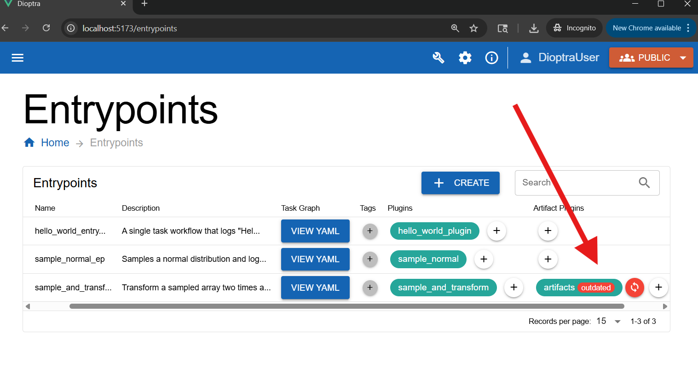
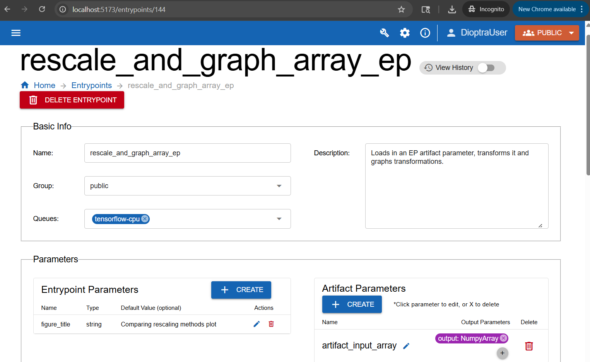
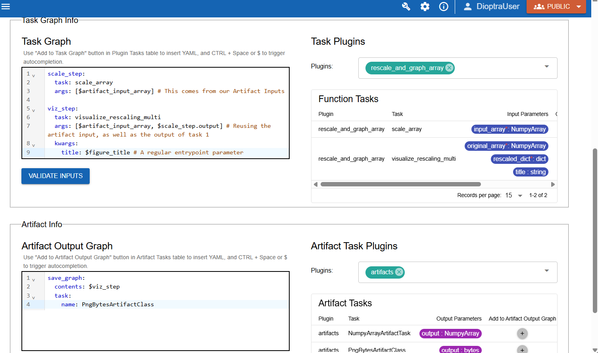
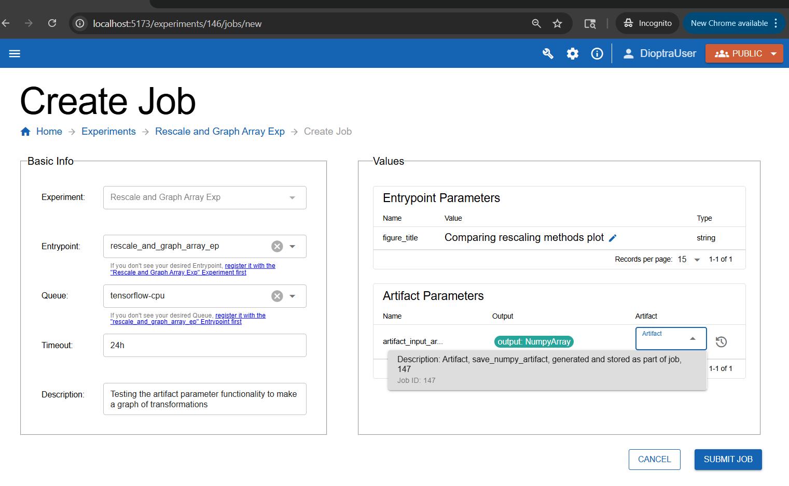
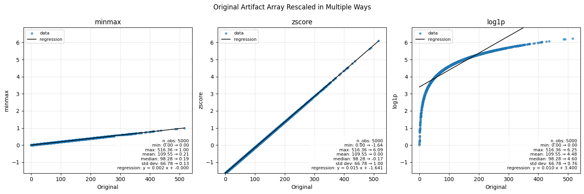

Using Saved Artifacts#
Overview#
In the last section, you learned how to save task outputs as artifacts. Now, you will take the next step: using a saved artifact as input in a new workflow.
This is done through artifact parameters. They behave like Entrypoint parameters, but instead of being set at job creation, they are loaded from disk. You can then reference them throughout the task graph.
Using Saved Artifacts in an Entrypoint Task Graph#
In this example, you will build a new workflow that:
Loads a NumPy array artifact that was saved from the last tutorial step
Applies multiple rescaling methods
Visualizes the results with Matplotlib
Saves the resulting PNG file as a new artifact
To accomplish this, you’ll need to perform the following:
Create a new Artifact Handler that is capable of serializing Matplotlib figures to PNG files
Define a new Plugin that reads in a Numpy array as an input and produces a Matplotlib figure as an artifact
Define a new Entrypoint to use the new plugin and new artifact handler
Once all that is done, we can run a job for this Entrypoint and select the previously saved NumPy Array as the Artifact Input Parameter.
Workflow#
Step 1: Add two New Plugin Parameter Types#
You’ll use the python dict type and the bytes type in your next Function Task and Artifact Task, so go ahead and add them now:
Go to the Plugin Parameters tab.
Create two new types:
Type one: Called
dict(for a Python dictionary type object)Type two: Called
bytes(for a raw PNG image)
For each type, add the name an a short description, then click Submit.
Step 2: Create the “rescale_and_graph_array” Plugin#
You want to create a plugin that utilizes a saved numpy array as an input.
Go to the Plugins tab and click Create Plugin.
Name it
rescale_and_graph_arrayand add a short description.Open the Plugin. Create a new file named
rescale_and_graph_array.py.Copy and paste the code below.
Import the functions via Import Function Tasks. Fix any types as needed.
rescale_and_graph_array.py
import matplotlib.pyplot as plt
import numpy as np
import structlog
import io
from dioptra import pyplugs
LOGGER = structlog.get_logger()
def _as_1d_float_array(arr) -> np.ndarray:
a = np.asarray(arr, dtype=float).ravel()
if a.size == 0:
raise ValueError("input_array is empty.")
return a
@pyplugs.register
def scale_array(input_array: np.ndarray) -> dict:
"""Return a dict of rescaled arrays using z-score, min-max, and log1p methods."""
x = _as_1d_float_array(input_array)
out = {}
# Z-score scaling
mu, sigma = np.mean(x), np.std(x)
if sigma == 0.0:
out["zscore"] = np.zeros_like(x)
else:
out["zscore"] = (x - mu) / sigma
# Min-max scaling (to [0, 1])
xmin, xmax = np.min(x), np.max(x)
if xmax == xmin:
out["minmax"] = np.full_like(x, 0.5)
else:
out["minmax"] = (x - xmin) / (xmax - xmin)
# Log1p scaling (nonlinear, requires non-negative values)
if np.any(x < 0):
LOGGER.warn("scale_array_dict.log1p_negative", msg="Negative values present; log1p not applied.")
else:
out["log1p"] = np.log1p(x)
return out
@pyplugs.register
def visualize_rescaling_multi(
original_array: np.ndarray,
rescaled_dict: dict,
title: str = "Original vs Multiple Rescalings",
) -> bytes:
"""Compare multiple rescaling methods with scatterplots and stats."""
x = _as_1d_float_array(original_array)
# Reorder dict to put minmax first if present
methods = list(rescaled_dict.keys())
if "minmax" in methods:
methods = ["minmax"] + [m for m in methods if m != "minmax"]
# Compute global y-limits across all rescaled arrays
all_y = np.concatenate([_as_1d_float_array(rescaled_dict[m]) for m in methods])
y_min = np.min(all_y)
y_max = np.max(all_y)
y_lim = (y_min, 1.1 * y_max)
n_methods = len(methods)
fig, axes = plt.subplots(1, n_methods, figsize=(5 * n_methods, 5), sharex=False, sharey=False)
if n_methods == 1:
axes = [axes] # make iterable
for ax, method in zip(axes, methods):
y = rescaled_dict[method]
# Truncate to shared length
n = int(min(x.size, y.size))
x_plot, y_plot = x[:n], y[:n]
# Regression fit
coef = np.polyfit(x_plot, y_plot, deg=1)
slope, intercept = coef
xx = np.linspace(np.min(x_plot), np.max(x_plot), 200)
yy = np.polyval(coef, xx)
# Scatter + regression
ax.scatter(x_plot, y_plot, s=12, alpha=0.6, label="data")
ax.plot(xx, yy, color="black", lw=1.2, label="regression")
# Stats
stats = (
f"n_obs: {n}\n"
f"min: {np.min(x_plot):.2f} → {np.min(y_plot):.2f}\n"
f"max: {np.max(x_plot):.2f} → {np.max(y_plot):.2f}\n"
f"mean: {np.mean(x_plot):.2f} → {np.mean(y_plot):.2f}\n"
f"median: {np.median(x_plot):.2f} → {np.median(y_plot):.2f}\n"
f"std dev: {np.std(x_plot):.2f} → {np.std(y_plot):.2f}\n"
f"regression: y = {slope:.3f}·x + {intercept:.3f}"
)
ax.set_xlabel("Original")
ax.set_ylabel(method)
ax.set_title(method)
ax.set_ylim(y_lim) # unified y-limits
ax.grid(True, alpha=0.3)
ax.legend(fontsize=8, loc="upper left")
ax.text(
0.98, 0.02, stats,
transform=ax.transAxes,
va="bottom", ha="right", fontsize=8,
bbox=dict(facecolor="white", alpha=0.7, edgecolor="none")
)
fig.suptitle(title)
fig.tight_layout()
buf = io.BytesIO()
fig.savefig(buf, format='png')
plt.close(fig)
return buf.getvalue()
Click Submit File
Note
This plugin defines two new tasks:
scale_array: to rescale the input array three different ways.visualize_rescaling_multi: to visualize all the rescaled arrays.
Step 3: Add Another Artifact Task#
Your second plugin task outputs a Matplotlib figure as a PNG image. To view this output, you need to save it as an artifact. You will add a new artifact plugin task that serializes a Matplotlib object as a PNG.
In the Plugins tab, open your
artifactsPlugin from the previous tutorial step.Add the new artifact plugin class code to the bottom of the file to define
PngBytesArtifactTask.Register it in your plugin the same way as the
NumpyArrayArtifactTask(see Step 2: Register Artifact Task).Name:
PngBytesArtifactTaskOutput Parameters - Name:
outputOutput Parameters - Type:
bytes
Add this class to the bottom of the file:
artifacts.py (add to bottom)
# Paste this after the definition of 'NumpyArrayArtifactTask'
class PngBytesArtifactClass(ArtifactTaskInterface):
"""Save PNG bytes in working_dir and return the PNG path. Deserialize returns PNG bytes."""
@staticmethod
def serialize(working_dir: Path, name: str, contents: bytes, **kwargs) -> Path:
"""Writes raw PNG bytes to disk."""
png_path = (working_dir / name).with_suffix(".png")
# Write the incoming bytes directly to the file
with open(png_path, "wb") as f:
f.write(contents)
return png_path
@staticmethod
def deserialize(working_dir: Path, path: str, **kwargs) -> bytes:
"""Reads raw PNG bytes from disk."""
png_file_path = working_dir / path
with open(png_file_path, "rb") as f:
png_data = f.read()
return png_data
@staticmethod
def validation() -> dict[str, Any] | None:
return None
then register the Artifact Task
Click Submit File to save your changes to
artifacts.py
Step 4: Create “rescale_and_graph_array” Entrypoint#
Now define a new Entrypoint that loads the array, transforms it, and saves the plot.
Go to the Entrypoints tab.
Note
Dioptra saves Snapshots of Resources each time Resources are modified. If an Entrypoint is referencing an old Plugin snapshot, Dioptra will warn you. Feel free to sync this Plugin now or to ignore this warning - it is irrelevant for this portion of the tutorial.

Click Create Entrypoint.
Name the new Entrypoint
rescale_and_graph_array_ep. Attachtensorflow-cpuas a Queue and provide a description.
Add Parameters:
In the Entrypoint Parameters box, add:
Name:
figure_titleType:
stringDefault:
"Comparing rescaling methods plot"
In the Artifact Parameters box, add the input parameter:
Artifact parameter name:
artifact_input_arrayOutput parameter name:
outputOutput parameter type:
NumpyArray

Create one Entrypoint parameter and one artifact parameter.#
Note
The specific artifact instantiated for a given artifact Entrypoint parameter is decided at job runtime.
Define Task Graph:
In the Task Plugins and Artifact Task Plugins windows, select the relevant plugins.
Task Plugins:
rescale_and_graph_arrayArtifact Task Plugins:
artifacts
Copy the Task Graph YAML below into the Task Graph editor.
rescale_and_graph_array_ep: Task Graph YAML
scale_step:
task: scale_array
args: [$artifact_input_array] # This comes from our Artifact Inputs
viz_step:
task: visualize_rescaling_multi
args: [$artifact_input_array, $scale_step.output] # Reusing the artifact input, as well as the output of task 1
kwargs:
title: $figure_title # A regular entrypoint parameter
Note
Note the reference to $artifact_input_array in the task graph. This is referencing the loaded artifact.
Define Artifact Output Graph:
Copy the Artifact Output Graph YAML below and paste it into the code editor for the Artifact Output Graph. It saves the generated matplotlib figure from step 2.
rescale_and_graph_array: Artifact Output Task Graph YAML
save_graph:
contents: $viz_step
task:
name: PngBytesArtifactClass

Showing how the Artifact Input Parameter is used in the task graph to produce a new output (a Matplotlib figure) which is then saved in the Artifact Output Graph#
Click Validate Inputs - it should pass.
Click Submit Entrypoint.
Step 5: Create Experiment and Run a Job#
Finally, test it out.
Create a new Experiment named
Rescale and Graph Array Exp. Add a description.Add the
rescale_and_graph_array_epentrypoint. Click Submit Experiment.Under this new experiment, create a new job.
Select the correct Entrypoint (
rescale_and_graph_array_ep) and add a description for the Job run.Under the Artifact Parameters box, select the Artifact generated from the previous step.
Click Submit Job.

Selecting the input artifact at runtime.#
Step 6: Inspect Results#
After running the job, open the Job and download the Output Artifact - it should be a PNG file that was saved from your Entrypoint.
Artifact Output from rescale_and_graph_array_ep:

The artifact that was generated from this Entrypoint - a Matplotlib figure showing the various rescaling methods.#
The original NumPy array artifact from the the previous workflow ranged from roughly 0 to 500+. Here’s how the three scaling methods reshape it:
Min-Max Scaling: Linearly maps values into [0,1], preserving relative spacing.
Z-Score Scaling: Centers data at 0 with unit variance; shows distance from the mean.
Log1p Scaling: Nonlinear compression; reduces the impact of large values and outliers.
Conclusion#
You now know how to:
Create Entrypoints that use artifact parameters as inputs
Chain workflows together across experiments using artifacts
Tutorial complete! You’re now ready to design your own workflows in Dioptra by combining multiple plugins, artifacts, and experiments.
Keep Learning#
This tutorial demonstrated the core functionalities of Dioptra. To see more interesting and complicated uses of these capabilities, view the advanced tutorials which utilize the Python Client for more complex workflows.